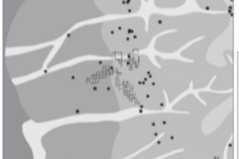
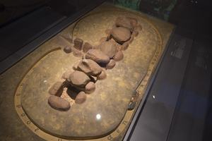
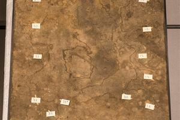
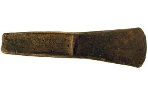
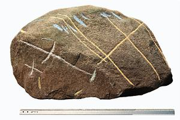
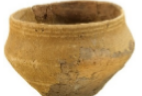

Bronstijd in Twente (2000-800 v Chr.)
Het verhaal van de bronstijd in Twente, van 2000 tot 800 voor Christus.
Listening points on this tour
-

1. Welkom en plattegrond -

2. Het Hunebed van Mander O2: ca. 3200–2900 v.Chr -
3. Grafheuvels
-

4. Mens van Mander 2000 v.chr. -
5. Sieraden uit de bronstijd: Barnstenen Kralen (+ Bronzen voorw.) Kippershoek ca 1800 v. Chr
-

6. Bonzen bijlen uit grafvelden van Vasse 1500–1300 v.Chr -

7. De Steen van Hezingen (groeven rond 1300 v Chr.) -
 8. Bronzen offer mes van Daarlerveen/Vroomshoop (ca. 1200 - 800 v.Chr.)
8. Bronzen offer mes van Daarlerveen/Vroomshoop (ca. 1200 - 800 v.Chr.) -

9. Urn gevonden op het grafheuvel complex van Mander -
10. Tenslotte...